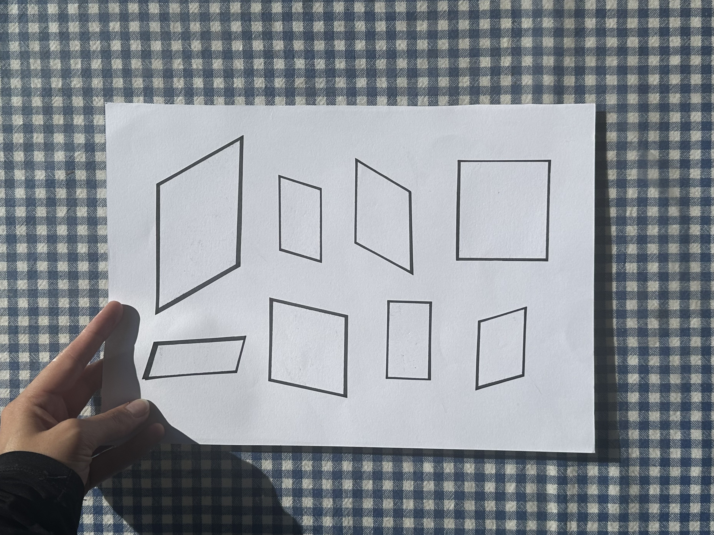

This week's studio class focused on idea generation in the lead up to Workbook 2A submission. This involved the crazy-8 method in which a new idea is sketched on page of containing eight grids. We each had a minute per grid to quickly brain-dump whatever concept came to mind, leaving a total of eight minutes for the activity overall. While I did not finish my crazy-8, I was still able to resolve a concept for this brief. The image above displays my rough draft of the crazy-8 idea generated in class. My concept for web-design revolves around an open plane in which user's are encouraged to actively engage with as they travel through the digital space. These angular boxes displayed on the page above demonstrate continually rotating images or text that users can interact with by clicking on them. While it was difficult to establish depth in this rough draft of my idea, it is something I would like to experiment with in continuation of this brief. Much of this concept is inspired by the interactivity of Jai Paul's website (also listed below), which involves the user to move through the digital plane in order to see the content that exists within it. While the homepage demonstrates a very one-dimensional approach to this concept, depth is an aspect of web-design I intend to explore further in the next coming brief and semester ahead.
HOMEWORK TASK
Outside of class, I continued to work with GitHub whenever I made progress on the brief, ensuring to update my index.html files and corresponding folders each time changes were made. As displayed above, my coding development involved the addition of margins, a header, an image, and the concept of flex-row to establish columns on the page (each containing different content). While the aesthetic choices are questionable, the development is there and allowed me to start working on structural layout I wanted to achieve for this brief.
HUNT'N'GATHER
Jai Paul is a British record producer and recording artist. Originally known for his online music presence on MySpace, Paul's self-published early demos on the platform are what became the catalyst for his recording and music legacy today. As a long-time fan and listener of Jai Paul, I naturally stumbled across his artist storefront and found it to be completely unique in it's nature. Very in line with his experimental and almost ambigious nature as an artist, the interactive digital space provides a plane in which users can travel between items only by moving through the eerie landscape in active search for new findings.